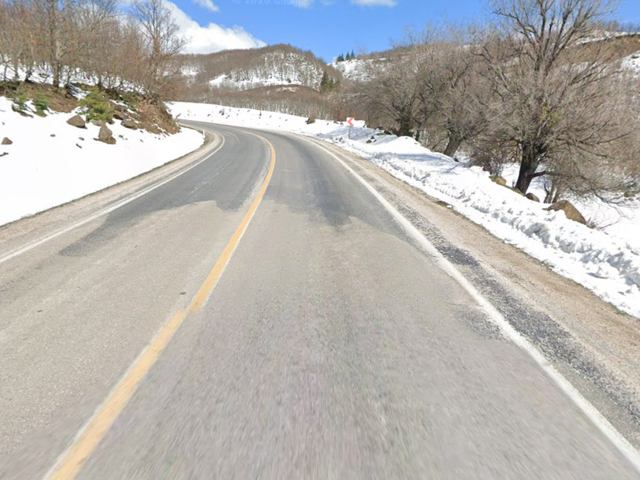

Görüntü nereden geliyor?
Fotoğraf kaynaklı: asfalt, kar ve toprak kaplamaları; mevcut 5 panoramadan küçük kırpımlar.
Tahmini: tüm 3D geometri, yol genişliği (6,6 m), viraj, eğim, ağaç ve çalı konumları.
Görsel referans 0–51,6 m. 51,6–100 m çevresi aynı karakterde tahmini uzatıldı. Ölçülmüş veya fotogrametrik rekonstrüksiyon değildir.
Turkuaz = fotoğraf kaplamalı tahmini mesh · turuncu = prosedürel geometri · 51,6 m çizgisi = referans sınırı.
Analiz ve kaynak verisi ↗Görseller © Google, Mart 2026. Önceki denemenin 5 panoraması kullanıldı. Belirtilen 11 görüntünün diğer 6 adedi henüz eklenmedi.

Ölçülüyor…